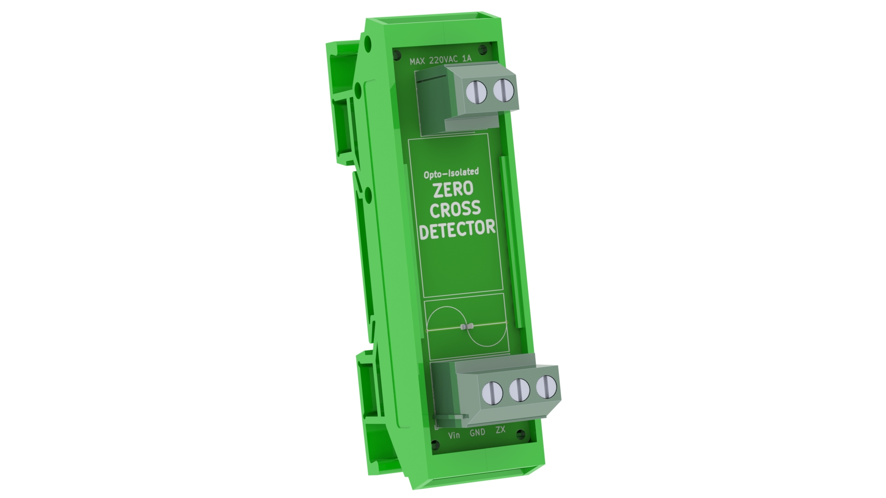
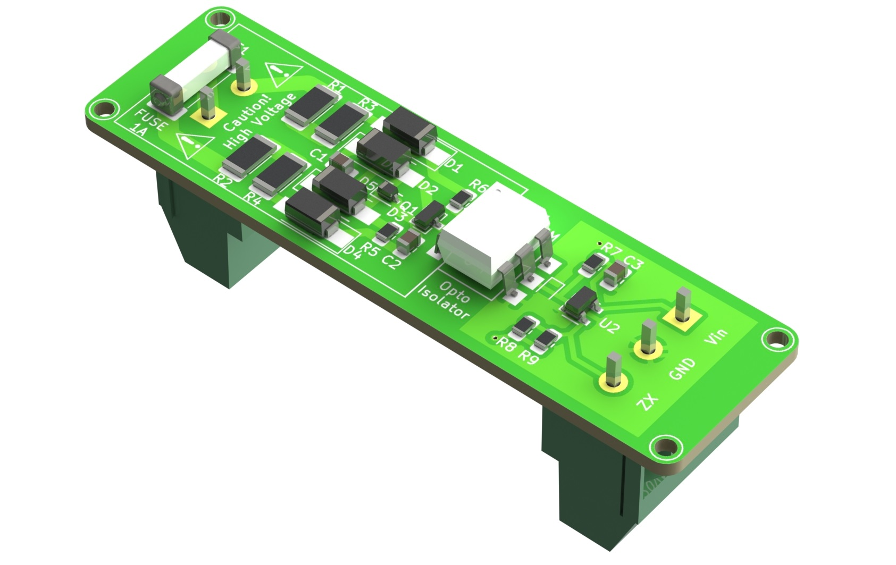
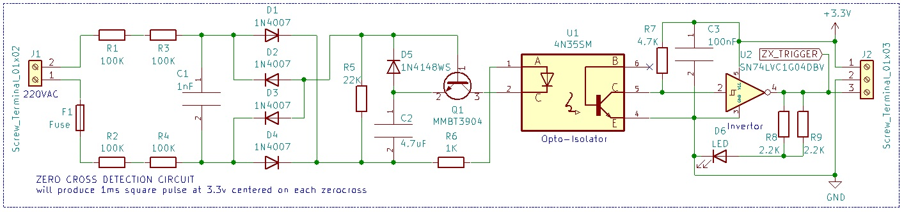

AC Zero Cross Detector Module for DIN rail mounting

Description
110/220VAC Opto-Isolated Zero Cross Detector Module for DIN Rail Carrier Mount with 3.3V or 5V Output - Ideal for Arduino, ESP32/ESP8266
This module detects the zero cross point of an AC supply and outputs a 3.3V or 5V square wave signal pulse of 1ms every time the zero point is crossed. For a 50Hz supply this pulse would be sent 100 times per second. This is ideal for micro-controller projects which require accurate synchronization with the AC supply, such as for controlling triacs to perform phase-angle control for light dimming or heater control. The AC side of the circuit is optically isolated from the DC side, providing important safety and protection for the micro-controller.

The AC supply is connected to the upper terminal block, and the lower terminal block is connected to the micro-controller, sharing its DC 3.3V or 5V and ground, and sending the output signal to a designated GPIO pin to trigger an interrupt in the code.
The board features a micro-LED indicator and is designed fit into a Camdenboss DIN rail enclosure for easy mounting.
This module adds to the growing number of DIN rail based accessories for micro-controller projects, enabling a 'plug and play' approach to speed up project-building.
CAUTION- This circuit uses mains AC voltage which is hazardous and can cause ELECTRIC SHOCK or FIRE. It must be independently reviewed and certified by a qualified professional before use. The designer accepts no responsibility for assembly or use of this module in any way.
Schematic diagram
<